并肩，才有勇气
本地双人合作，靠近合屏、远离动态分屏。各自选择技能与伙伴，共享成长；队友倒下时，靠近救援再一起向前。
LOCAL CO-OPA LITTLE COURAGE. A WORLD OF WONDER.
异闻录
和你一起，
点亮整片星河。
在怪潮中走位，让魔法不断进化。
追上会逃跑的宝箱，和身边的人一起闯过三章奇境。
01 / THE ADVENTURE
自动施法，灵巧走位。拾起经验，选择成长，
让每一次出发，都成为不同的童话。
本地双人合作，靠近合屏、远离动态分屏。各自选择技能与伙伴，共享成长；队友倒下时，靠近救援再一起向前。
LOCAL CO-OP从一次星光、一道冰霜开始。选择技能分支，逐步进化，让小小的法术绽放成满屏魔法。
EVOLVE YOUR MAGIC五只灵兽，自带被动与主动能力。让蜂鸟守护、月光扫场，或召来人鱼潮汐与纺车马的冥火奔袭。
MEET YOUR COMPANIONS通关积累角色成长，解锁专属力量的装备资格。战斗中积攒充能，在关键时刻释放小公主的黑曜石蝴蝶等专属技能。
AWAKEN YOUR POWER02 / MOTION & MAGIC
一段想象，一段真实的战斗。
开发中实机 近期版本编排实录：动态分屏、逃跑宝箱、连环陶罐、沉城引灯、引力弹珠与 Boss 战。
电影感宣传片 豆包 AI 宣传演绎，呈现世界氛围与角色想象。
宣传片为 AI 概念演绎，实际玩法与画面请参考实机视频。实机片段使用演示场景，隐藏部分界面；游戏内容持续开发中。
03 / CHOOSE YOUR MAGIC
公开角色 · 当前游戏形象

PAISLEY / STARLIGHT
从星弹到流星花雨，再到星穹盛放。用星光锁定敌群，让月光涟漪守住身边的空间。
XANA / WATER
音符弹射，水流折返。用涡心之歌牵制追兵，清泉庇护也能为附近队友提供护盾。

MAGEC / SUNLIGHT
晨曦光矛铺开贯穿弹幕，日光旋风切割近敌。以天顶裁决轰炸敌群，让日印层层引爆。
04 / BEYOND THE FOREST
三章世界 · 不同的战场与挑战
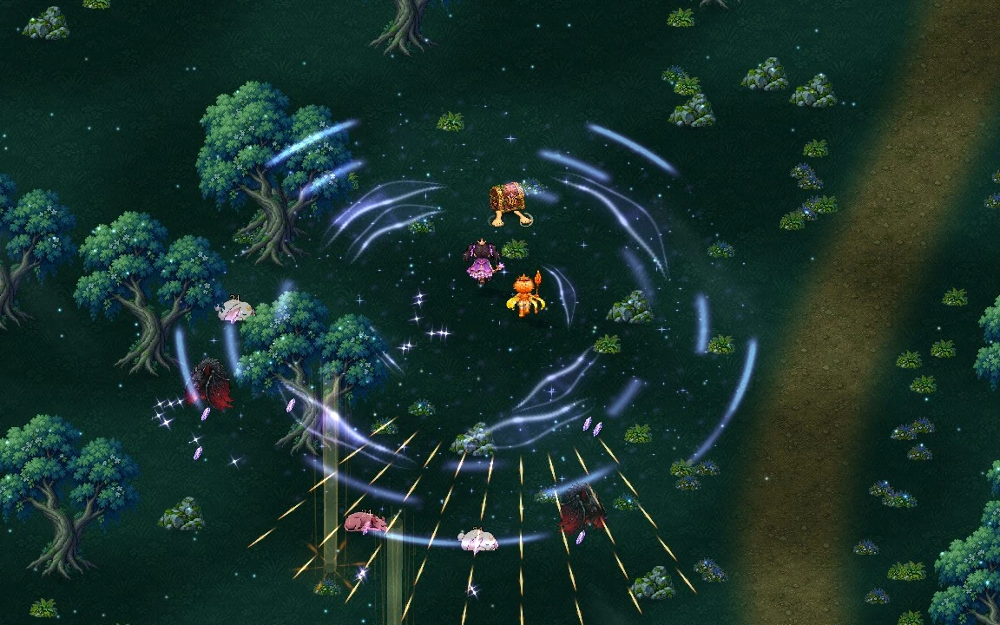
从林间怪潮到绿松石火蛇，在探索与走位中建立第一套魔法搭配。
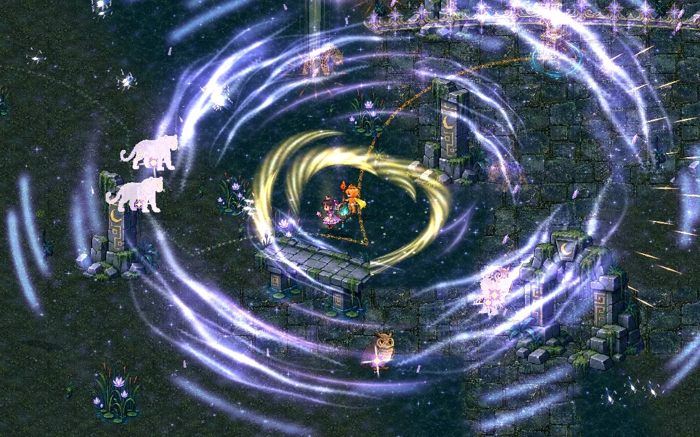
跟随魂灯穿过沉城，引出旅途的奖励，再迎战双头巨蛇。
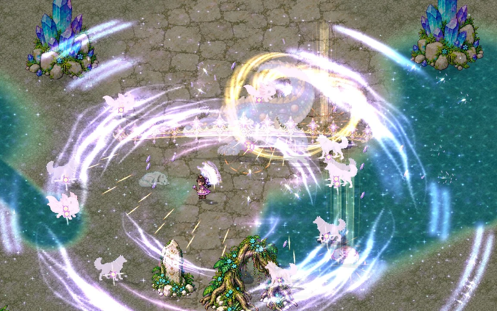
在圣泉与水晶之间迎击敌群，向宇宙鳄鱼发起挑战。
05 / TAKE THE DETOUR
追逐 · 探索 · 瞬间翻盘
CATCH IT IF YOU CAN
逃跑宝箱让探索变成追逐；连环陶罐、金币与宝匣，让穿过地图的路也充满收获。
FOLLOW THE LIGHT
在月蚀沼泽接取沉城引灯，沿着灯光前进。完成任务，领取宝箱与本局祝福。
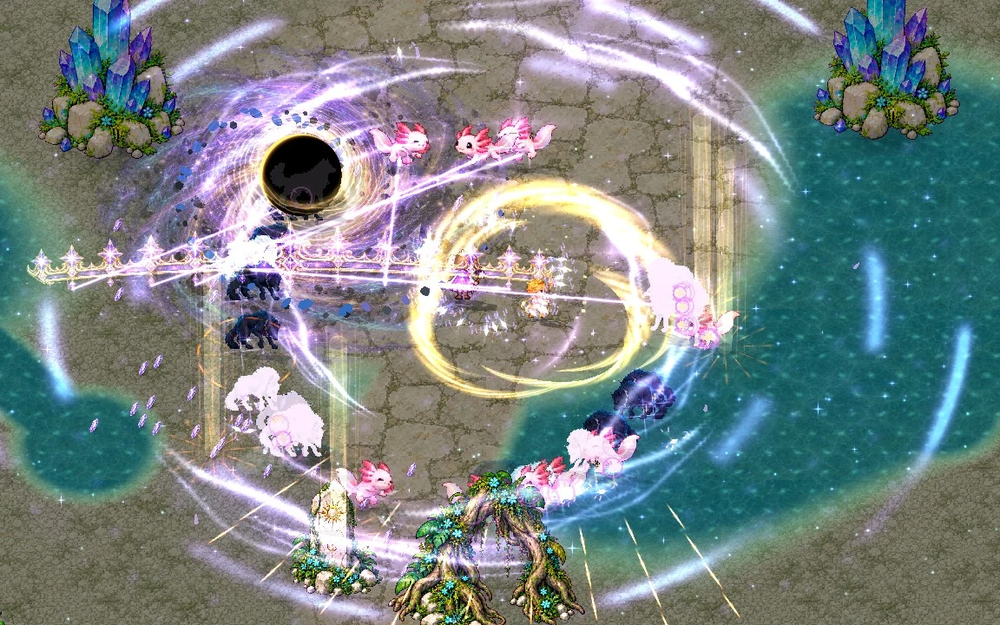
BORROW A LITTLE POWER
拾取引力弹珠，把怪群拉向黑洞；也可能遇见雷霆疾走或女剑士，获得限时战斗力量。
以上为当前开发版本的游戏内编排演示截图；部分画面隐藏界面。
06 / YOUR SPIRIT COMPANION
收藏 · 装备 · 主动召唤
寻找伙伴宝箱，扩充永久收藏。角色达到 3 级后可装备伙伴；双人共享收藏，各自选择搭档、独立召唤。

攻击提速 · 短暂免伤与加速

范围强化 · 月光环扫场

冷却缩短 · 主动重置技能冷却

生命加成 · 潮汐治疗与击退

移动提速 · 冥火冲锋开路
07 / MAKE IT YOUR OWN

拾取经验后选择技能，强化伤害、范围或多重，再向进化迈进。双人各自选技，组合成互相配合的战斗方式。
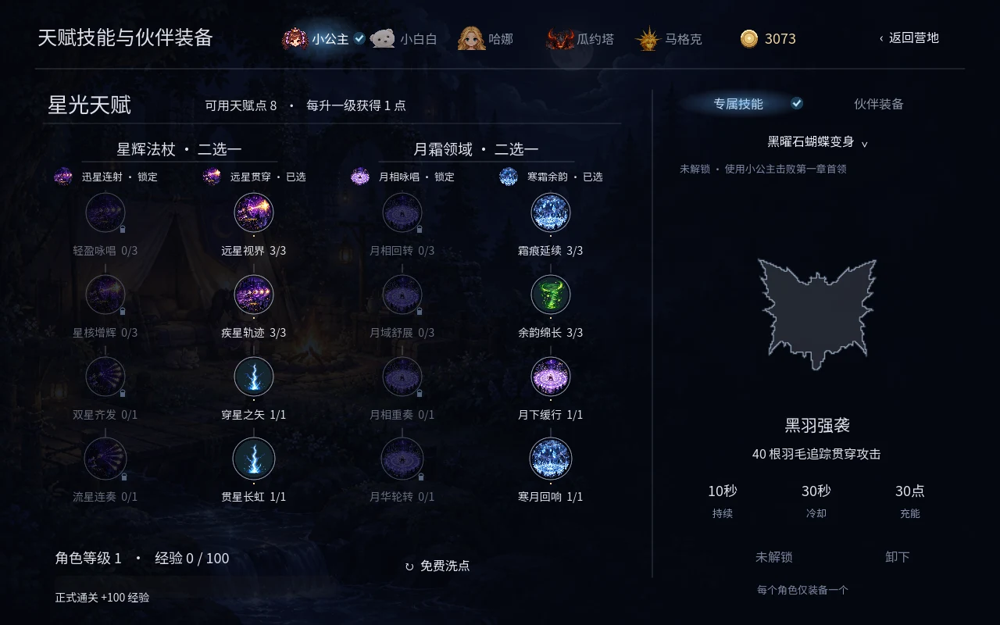
积累金币与角色信物，解锁更多冒险者。搭配分支天赋，通关提升角色等级，逐步获得专属技能与伙伴的装备资格。
08 / MADE WITH LOVE
制作故事 · 创作者的话
我和孩子，一起创造的冒险。
做《Paisley异闻录》的初衷很简单：
我想和孩子多一种一起互动的方式。
这款游戏，是我和孩子一起互动、一起创造的一个载体。我希望这段相处的时间，能慢慢变成一个可以走进去、可以亲手探索的小世界。
在这里，想象可以拥有形状：小公主挥起魔杖，森林之外还有沼泽与星河。做游戏的过程，也可以成为我们认识彼此的过程。
我想留下的，不只是一款游戏。更是我们一起参与创造的这段时光，以及一个可以并肩出发的地方。
希望有一天，回头看这个小世界时，
我们都能说：这是我们一起做的。
——《Paisley异闻录》创作者
09 / WORK IN PROGRESS
内容更新 · 2026.10.11
从第一位角色，到两个人并肩冒险。这里记录《Paisley异闻录》如何一点点长出自己的模样。以下按主题整理已有开发记录；每一次加入新内容，也伴随着反复调整。
更新三位公开主角的游戏形象，展示星系、水系与太阳系的不同打法。
补充逃跑宝箱、连环陶罐、沉城引灯与临时力量，用游戏画面展示探索中的变化。
人鱼与纺车马加入展示，蜂鸟、精灵和阿米拉米亚的介绍同步当前能力。
从动态分屏与独立选技，到天赋、信物与伙伴装备，展示一局冒险内外的选择。
已有内容仍在迭代，平衡与操作手感还需要更多实际试玩。这份手记记录开发过程，游戏尚未正式发行。
THE STORY IS STILL UNFOLDING
《Paisley异闻录》正在开发中。
愿每一个小小的你，都能找到一起冒险的人。
THE INSPIRATION ARCHIVE
那些成为技能、怪物、Boss 与伙伴的灵感，最初是什么模样？点击卡片即可放大阅读，展开下方图鉴可查看全部故事。
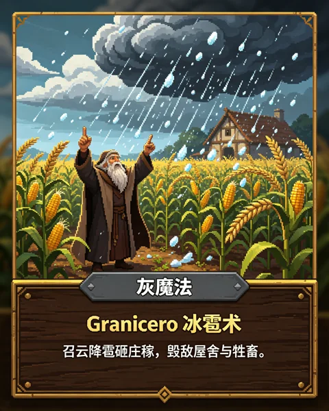
冰雹术 · Granicero技能与变身 蝙蝠 · Camazotz怪物
蝙蝠 · Camazotz怪物 宇宙鳄鱼 · Itzam Cab AinBoss
宇宙鳄鱼 · Itzam Cab AinBoss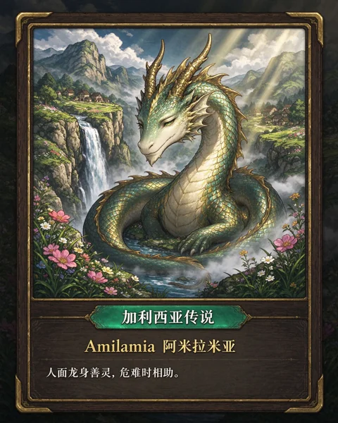
阿米拉米亚 · Amilamia伙伴共 19 张参考故事卡 · 点击卡面可放大
冰雹术的云层、冰晶与降雹意象参考。
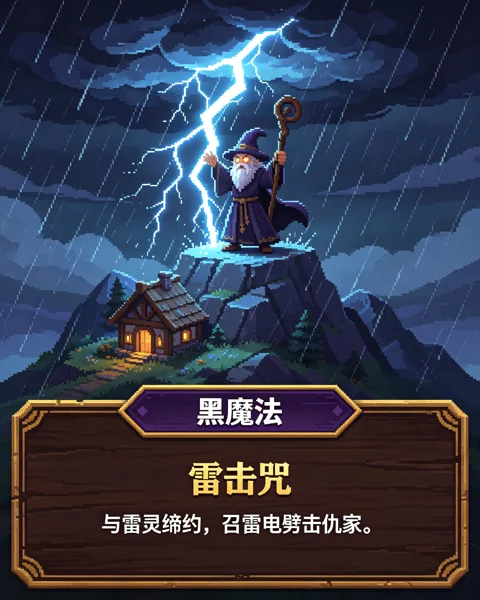
放大阅读 ↗游戏雷击咒的参考卡。
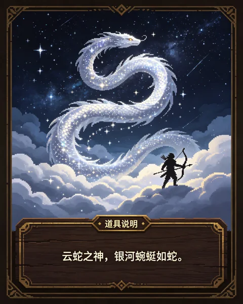
放大阅读 ↗云蛇的形象参考。
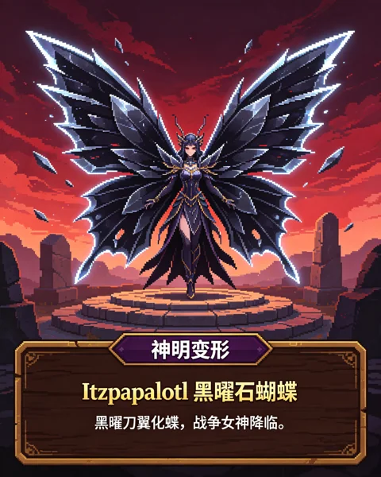
放大阅读 ↗小公主专属变身的参考卡。
放大阅读 ↗童话森林中的蝙蝠敌人参考。
 放大阅读 ↗
放大阅读 ↗童话森林中的月兔参考。
 放大阅读 ↗
放大阅读 ↗童话森林中的无毛犬参考。
 放大阅读 ↗
放大阅读 ↗童话森林中的山灵参考。
 放大阅读 ↗
放大阅读 ↗月蚀沼泽中的猫头鹰参考。
 放大阅读 ↗
放大阅读 ↗月蚀沼泽中的美洲豹参考。
 放大阅读 ↗
放大阅读 ↗星河天井中的蝾螈参考。
 放大阅读 ↗
放大阅读 ↗星河天井中的黑白幽灵犬参考。
 放大阅读 ↗
放大阅读 ↗星河天井中的水怪参考。
 放大阅读 ↗
放大阅读 ↗童话森林 Boss 的形象参考。
 放大阅读 ↗
放大阅读 ↗月蚀沼泽 Boss 的形象参考。
放大阅读 ↗星河天井 Boss 的形象参考。
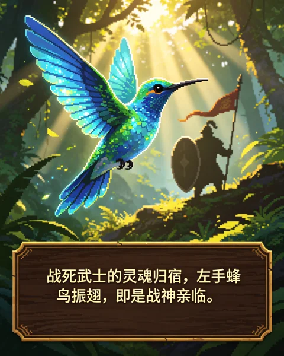
放大阅读 ↗伙伴翠羽蜂鸟的参考卡。
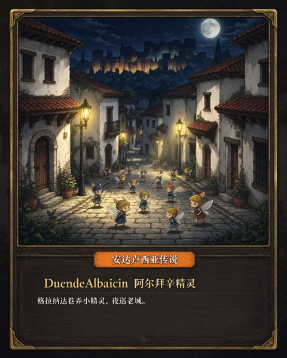
放大阅读 ↗伙伴阿尔拜辛精灵的参考卡。
伙伴阿米拉米亚的参考卡。
没有找到对应卡片，试试其他名称或分类。